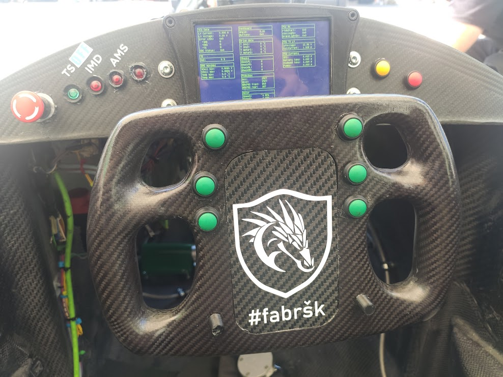
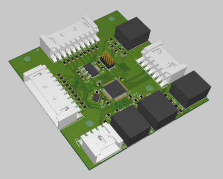
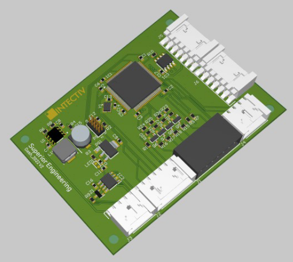
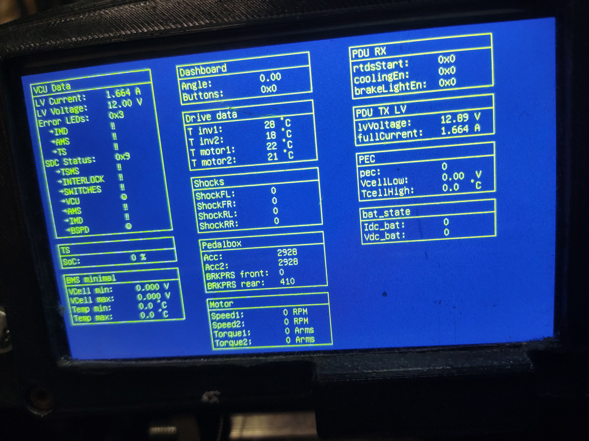
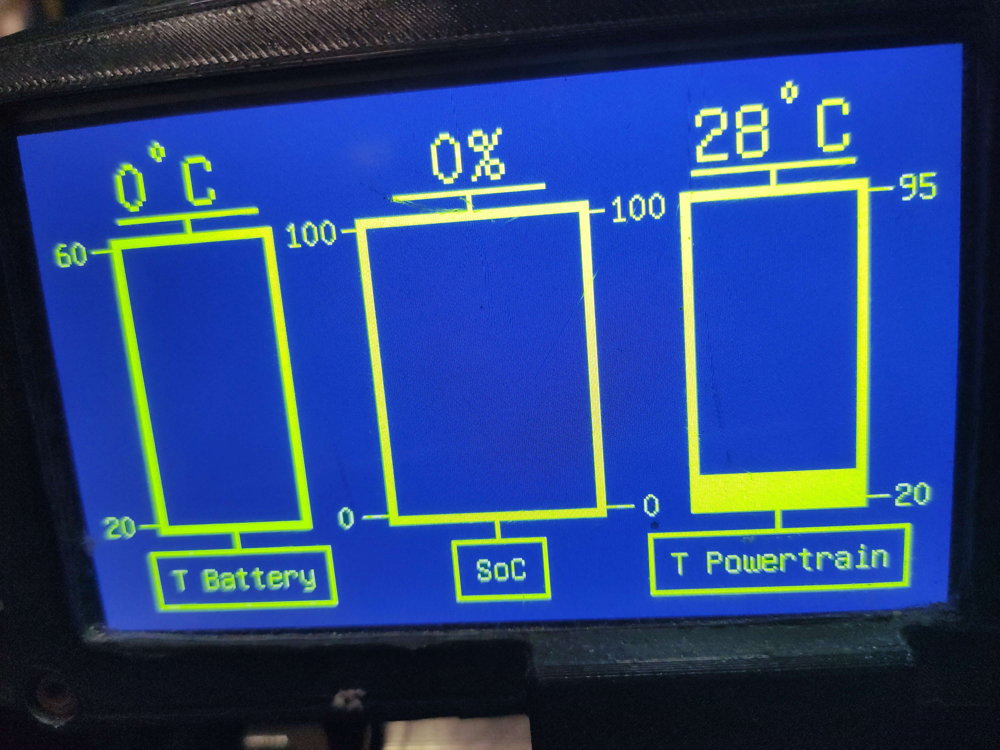
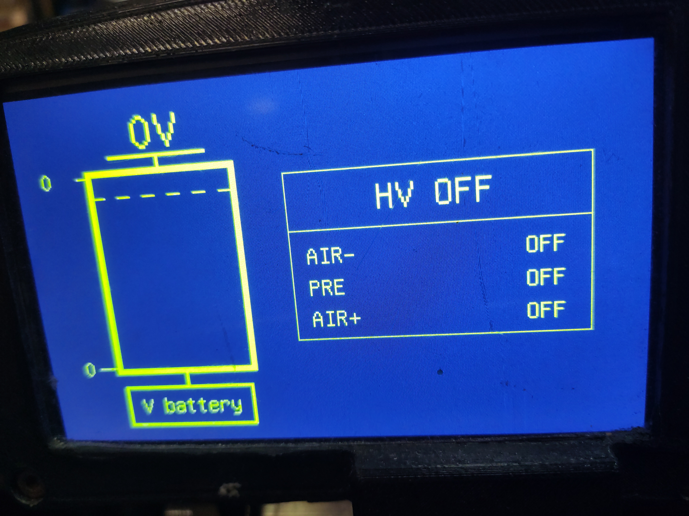
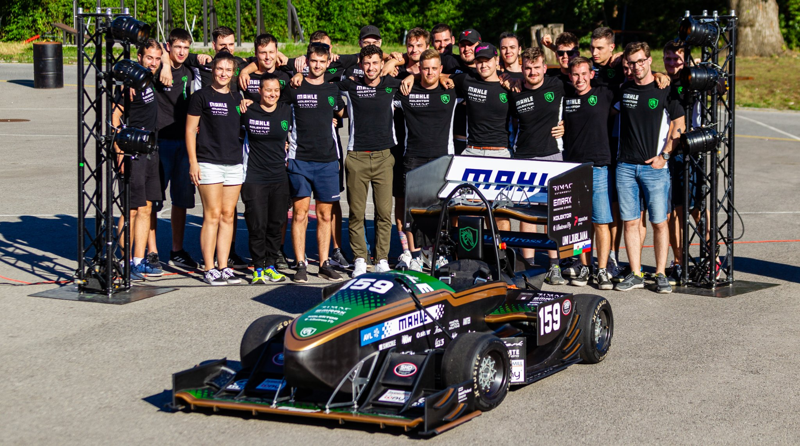

User interface of the Formula student race car (season 2021/22)
In this brief report I will present the user interface I have developed for the 2022 race car of the Formula student team in Ljubljana - Superior engineering. The UI was completely redesigned in the season 2021/22. The goal was to use a color LCD and implement multiple screens for different use cases (racing, debugging the CAN bus, entertainment..). Showen screen can be changed from user’s input on the steering wheel. Team’s former cars had 7/14 segment displays:

But first, what is Formula Student?
Formula student is world's largest engineering competition. Students build a single seat formula race car with which they can compete against teams from all over the world. The competition is not won solely by the team with the fastest car, but rather by the team with the best overall package of construction, performance, and financial and sales planning.
The user interface
The user interface consists of the Steering wheel and the Dashboard.
Steering wheel
The only task of the Steering wheel is to read the input of the buttons and 2 absolute rotary encoders and transmit the read data to the Dashboard via SPI. Inside the wheel is installed a custom printed custom printed circuit board with a STM32F303CC MCU.
Dashboard
The race car's dashboard[Fig2] consists of (from left to right) emergency shutdown button, 4 error LEDs, TFT LCD, 2 buttons. Shutdown button and LEDs must be present according to the rulebook. State of the buttons are transmitted through CAN bus and can trigger the start of the high voltage system. Behind the dashboard is hidden a custom printed circuit board with a STM32H743VI MCU, which controls all mentioned I/O devices:
LCD display
High brightness, 480x800, TFT LCD is used with the Adafruit TFT driver board. The Dashboard is controlling the driver board via SPI interface. The official driver board library for Arduino was modified for the use with STM32. I have designed and implemented the screens displayed on the LCD. Blue and yellow color combination was used to achive maximum contrast.
CAN screen
All CAN messages are displayed. Other team members working on the car's electrical system can use this screen for debugging purposes.
Screen for racing
Displayed when driving, this screen shows only the most important data, that concern the driver - temperatures of the battery and powertrain (max T of both inverters and both motors) and state of charge of the battery. Our drivers wanted no extra info on this screen, as they have practically little to no time to look at the display while driving, due to the layout of the Formula student’s dynamic events. Also, i believe, GUI should be minimalistic and clear.
Precharging screen
Precharge screen is used for observing precharging of the battery.
Pong screen
The Pong game clone for entertainment purposes.
Closure
Thank you for reading. If you want to learn more you can check out my Bachelor's thesis (in Slovenian language).
